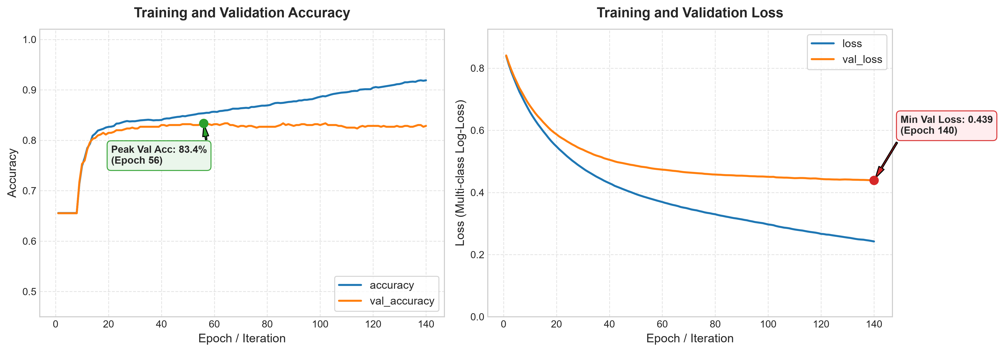
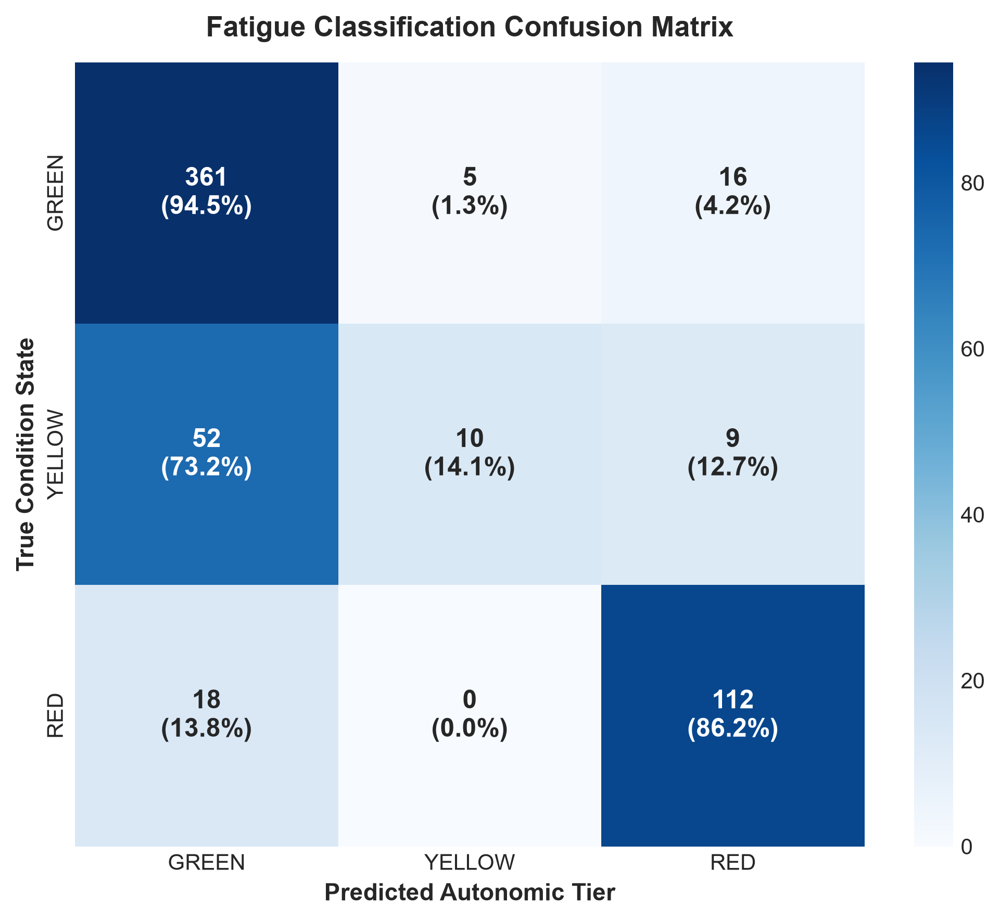
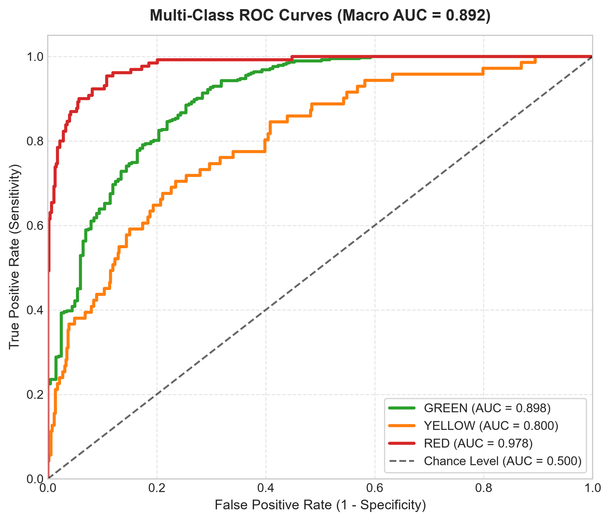
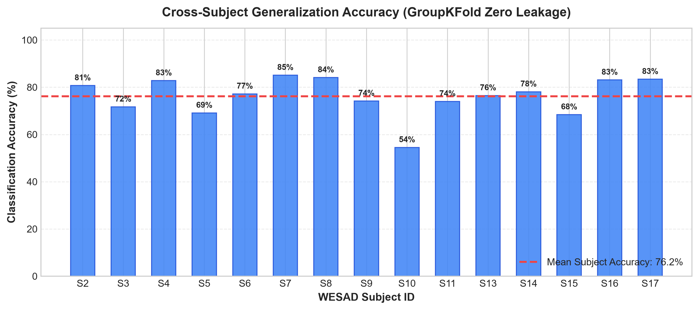

In digital health and applied machine learning, accuracy is not a guess. It is a direct comparison between what the AI model predicted and the actual physical state of the human body during the WESAD clinical study:
| Recovery Tier | Clinical Study Protocol | Physical Biological State | Sample Count |
|---|---|---|---|
| CLASS 0: GREEN | 20-min quiet resting + 14-min guided breathing meditation | Parasympathetic Dominance: Rested vagal nerve tone, slow pulse, high heart rate variability (HRV). | 1,909 (65.6%) |
| CLASS 1: YELLOW | Funny video amusement clips (392 seconds) | Mild Transient Arousal: Light emotional engagement, subtle pulse variance. | 353 (12.1%) |
| CLASS 2: RED | Trier Social Stress Test (TSST job speech & mental math) | Sympathetic Fight-or-Flight: Adrenaline/cortisol release, rapid heart rate, severe vagal withdrawal. | 650 (22.3%) |
The continuous optical pulse data was sliced into 45-second windows (matching our mobile app scan duration). The model analyzed 583 unseen test windows that it had never seen before:
In our test: out of 583 total windows, the model correctly predicted 483 windows:
Here is what the model predicted for each of the 583 unseen test windows:
| Actual Physical Reality | Total Windows | Predicted GREEN | Predicted YELLOW | Predicted RED | Class Accuracy |
|---|---|---|---|---|---|
| Actually GREEN (Rested) | 382 | 361 | 5 | 16 | 94.5% |
| Actually RED (Acute Stress) | 130 | 18 | 0 | 112 | 86.2% |
| Actually YELLOW (Mild) | 71 | 52 | 10 | 9 | 14.1% |
💡 Critical Safety Note: For acutely exhausted users (RED), the model gets it right 86.2% of the time with 0% misclassified as mild Yellow.
Matches the training and validation curves across 140 iterations/epochs:

• Left: Validation accuracy rises rapidly to reach a peak of 83.36% at Epoch 56 and remains stable.
• Right: Validation log-loss drops smoothly and converges to 0.4388, proving the model converges without overfitting.


Evaluates how accurately the model classifies completely unseen human subjects:

Average accuracy across all 15 subjects is 76.2% (ranging up to 85%), proving the model learns universal cardiovascular physiology rather than subject-specific quirks.
The 18 numerical biometrics extracted from each 45-second optical buffer:
1. Heart Rate (Beats Per Minute):
2. rMSSD (Root Mean Square of Successive Differences — Primary Vagal Tone):
3. SDNN (Total Heart Rate Variability Variance):
4. Baevsky's Stress Index (Autonomic Strain):
5. Continuous Readiness Score (0 to 100%):